Premium
WK 4ª
OFOS 4ª
Padrão 3ª
WZR
WZR 3ª
Mais usado
GigaClima 4ª
GigaClima 3ª
Escuro-azul
Navy
V4 Red
Crimson
Red 600
Red 500
Coral Red
Orange-Red
Gold (Óticas)
Blue (Biesky)
- Verde #4ADE80 / #10B981 / #22C55E — Sucesso, Ganho, Avanço, Growth
- Vermelho #EF4444 / #CF1918 — Perda, Alerta, Problema, Atenção
- Azul #3B82F6 / #60A5FA — Nutrição, Educação, Informação
- Laranja #FF9800 / #EF9F27 — Pendente, Atenção moderada
- Branco/Cinza — Neutro, Espera, Sem status
- Verde-vivo #25D366 — WhatsApp CTA
- Azul Google #4285F4 — Google Ads referência
Média: 20–30 shapes (padrão da maioria)
Alta: 36–44 shapes (Decorti, WK, Studio HH)
Extrema: 61 shapes (WK Carpetes 3ª — bento ultra-denso)
Esta seção não é uma lista abstrata. Ela consolida padrões que aparecem nos decks das Semanas 2, 3 e 4: Fibranet, Gigaclima, Movement, Tropical Magic, Zabeu, Laundry Pass, Biesky, OFOS, WZR, Studio Henrique e outros. O objetivo é transformar repertório visual real em componentes que possam ser reutilizados pela skill em HTML, PPTX e Google Slides.
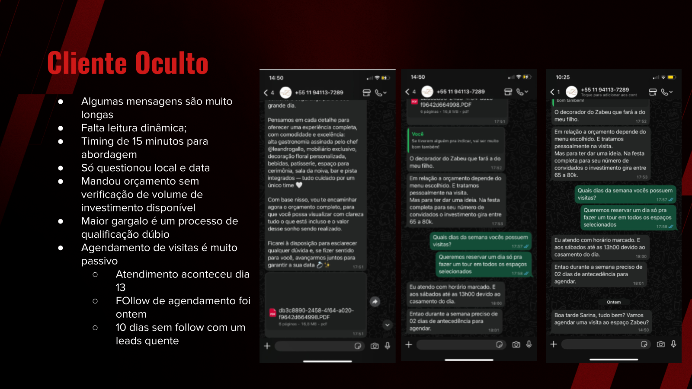
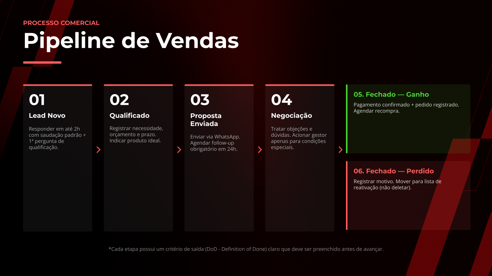
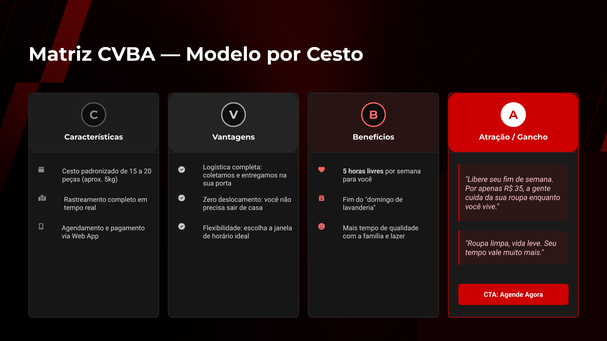
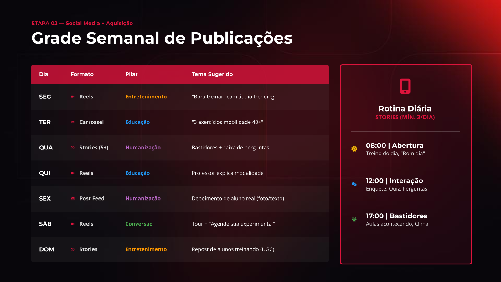
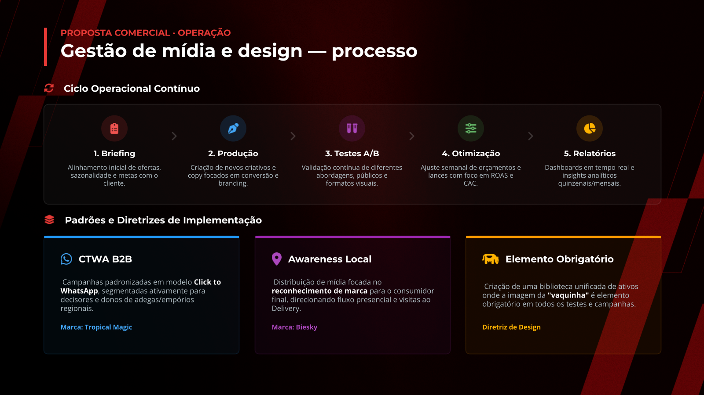
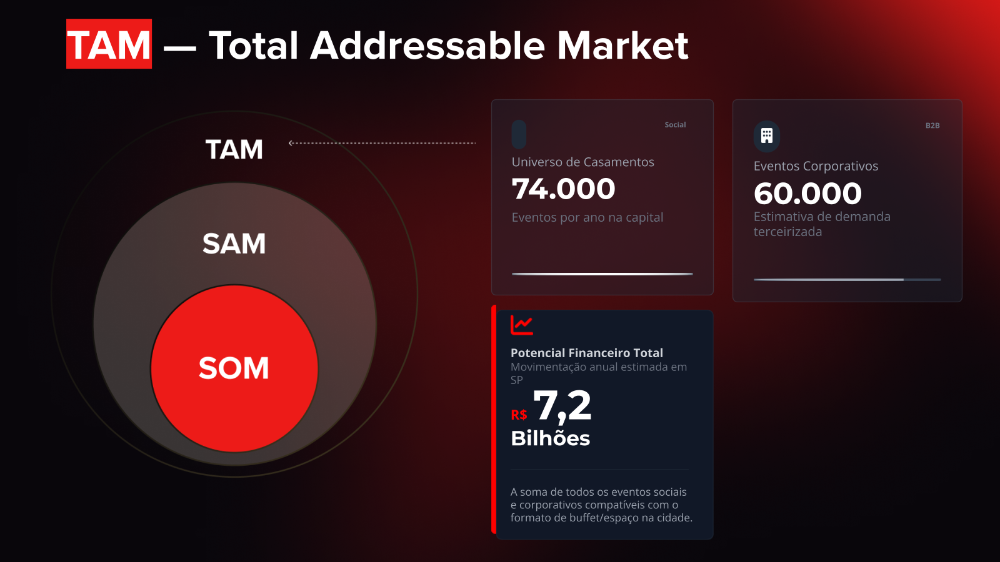
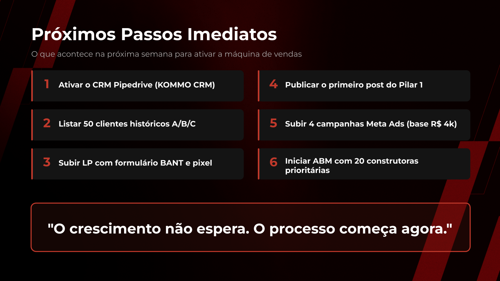
6px — Borda lateral de card (padrão)
8px — Borda superior de card premium
10px — Destaque máximo, card hero
rgba(255,255,255,0.03–0.06) — cards neutros
rgba(accent, 0.05–0.10) — cards tintados pela cor de acento (vibrância)
rgba(accent, 0.15–0.20) — cards de alerta ou destaque forte
Cards grandes: 12px
Badges/pills: 20–24px
Micro-elementos: 4–6px
Avatares/círculos: 50%
- Vermelho #E80403 - padrao base
- Ouro #C9A227 — Óticas Líder 3ª
- Laranja-Red #E8420A — OFOS 4ª
- Azul #2196F3 — Tropical Magic Biesky
- Crimson #DC143C — WZR / Movement
- Âmbar #EF9F27 — Espaço Zabeu 3ª
- Coral #FF4B4B — WZR 4ª
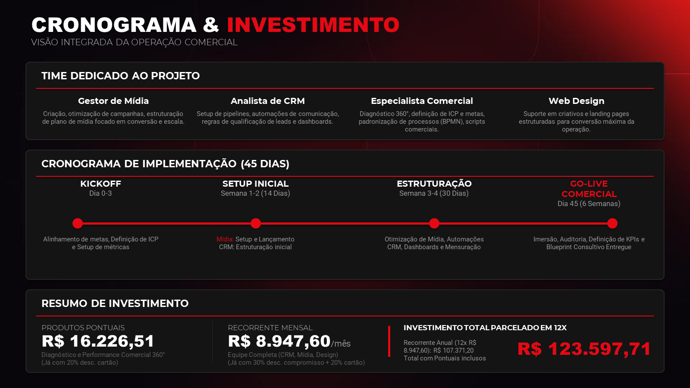
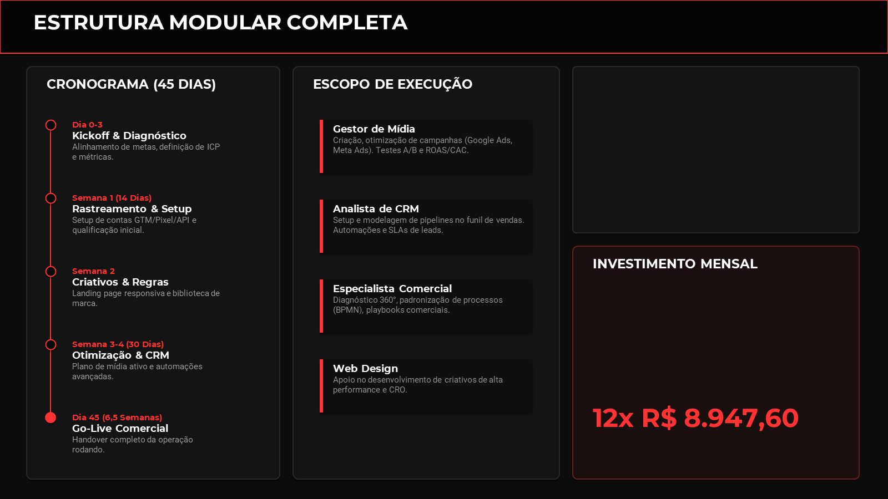
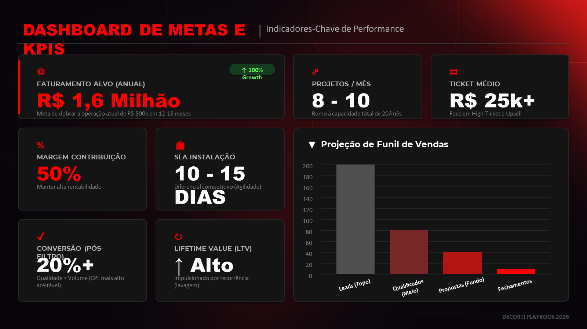
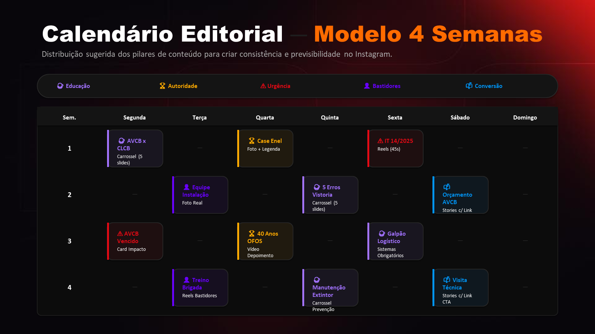
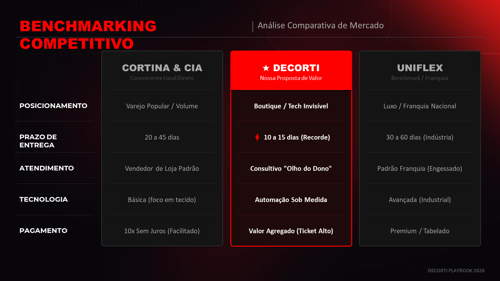
Apresentações do sistema @eder.vasconcelos seguem um sistema de design dark/premium com acento dinâmico por cliente. O padrão é: fundo escuro profundo (#0D0D0D–#1E1E1E), texto branco e cinza claro, acento vermelho como cor padrão (#E80403 ou variações), e acento customizado por identidade do cliente. O layout é sempre tipo Bento Grid com densidade alta de informação, cards arredondados, topbar decorativa, hierarquia tipográfica Montserrat/Roboto e zero tabelas nativas.